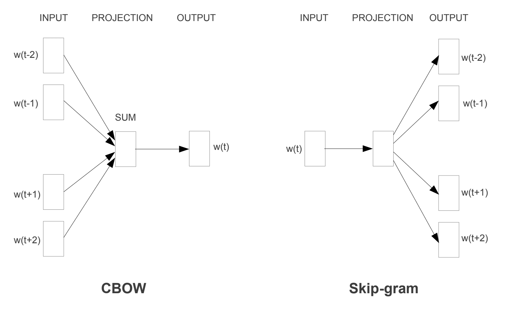
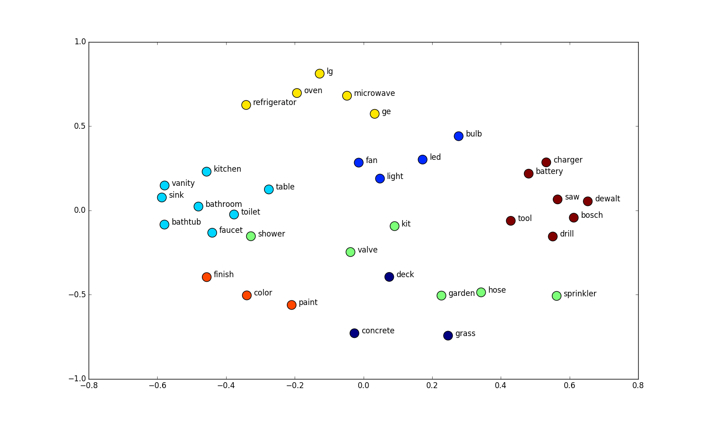

Embeddings as a vector representation allow describing objects in a continuous N-dimensional vector space. It is the most common method for building the systems which must to calculate relations among the objects (ex: tokens in NLP) using their vector representation.
In the history of NLP word embeddings have been a revolutionary improvement in semantic understanding of linguistic units of language.
First of all, we define linguistic pieces of the text as tokens. These tokens can be represented as you want, but nowadays the most popular tokenization methods work with words, n-grams of symbols, and characters. Such discretization allows us to split the text on building blocks and already work with it as well as with lists of objects which can be analyzed by counting, building distributions etc.
Well, now we have defined parts to work with, but what can we do with them in terms of ML? The decision today is obvious - build convenient and effective probabilistic models which contain information about their relative distributions in texts and bound the meaning of the texts with it.
The concept of a semantic space with lexical items (tokens) have been developed a long time ago. In the beginning, the idea of semantic space was represented by SVD and LSA further in the late 1980s. In 2000 Bengio et al. published a series of papers "Neural probabilistic language models" where they explain reducing the high dimensionality of words representations in context by "learning a distributed representations for words".
Words embeddings come in two different styles:After 2005, words embeddings techniques rely on neural network architectures mostly instead of probabilistic and algebraic methods.
Year by year computational power was growing up and give to the developers and many research groups the possibility to make more complex experiments, and in the year 2013, a team at Google led by Tomas Mikolov created word2vec. Word2Vec (w2v) has become revolutionary and the most popular NLP toolkit all over the world among developers and also have some popularity today.
A more advanced approach is represented in GloVe, fastText. fastText contains the same ideas as w2v, but the main difference is that it uses symbols n-grams instead of whole words. It allows incorporating all language meaning flexibility by handling mistakes, composed and highly rare words.
Text - the group of words in some language which are connected in a sequence and bring specific meaning.
Token - encoded lexical unit (groups of words, words, n-gram of symbols, characters).
Embedding - n-dimensional vector representation of the sematic meaning of the token.
Window - group of n closely placed tokens.
Skip-gram, CBOW - methods of calculating semantic meanings of the words in the specified context (related to w2v, fastText).
Word embeddings allow us to compare the semantic meanings of tokens in a sentence. Also, using such kind of abstraction we can aggregate the groups of words into a single meaning retrieving new vectors for their representations. Operation of meanings aggregation may help to retrieve the semantic meaning of the whole sentence. Trying to reveal the idea behind the embeddings it would be useful to discuss how can we get tokens embeddings and how it might look in 2D version of their vectors.
Trying to recognize what is distribution semantic in the beginning of the paper we touch on the theme of mutual tokens cooccurrence. In this context, I would like to provide an example - while reading the books we used to take into account neighbor words to recognize the meaning of the target one (imagine if you are learning the language and cant translate the term you don't know). It leads us to the discussion of Bayesian probabilistic theory and more, but I will not provide mathematical formulas in this paper now from scratch and at all.
The main idea you have to come up with - is that similar words with similar meanings meet each other more often in the local context. This statement mirrors the idea of the skip-gram and CBOW.
We build embeddings by means of optimizing the probability function to meet tokens in the same local context (in this picture tokens = words). The size of this context - window length. This window slides over the text and asks the model to make predictions using words inside.
Words Embeddings can be extracted from the data using one layer network. The size of the hidden layer of this network is equal to the embedding size (published fastText embedding set contains 300 dim vectors).
Let's take these vectors and reduce their dimension to 2 because we can't imagine 300 dim vectors in reality even if you are smart as... you know who.
In the picture, we can see groups of words with similar meanings. Groups are colored in the same color and it is clear that we can choose right some clusters of words whose looks quite correctly distributed. Just emphasize the pairs: color-paint, garden-grass, table-kitchen, oven-microwave. Looks good right?
This picture shows that we can build semantic features of the tokens (words in our case) which can be used further in a more specific task.This opens to us topics about transfer learning and attention mechanism, but these are already separate topics for a separate article.